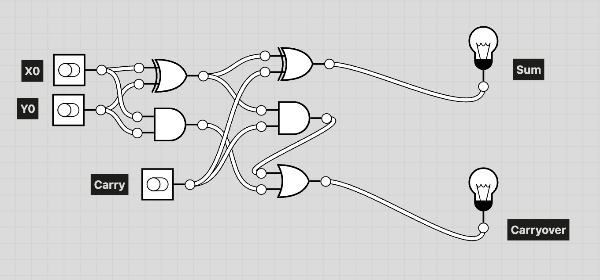
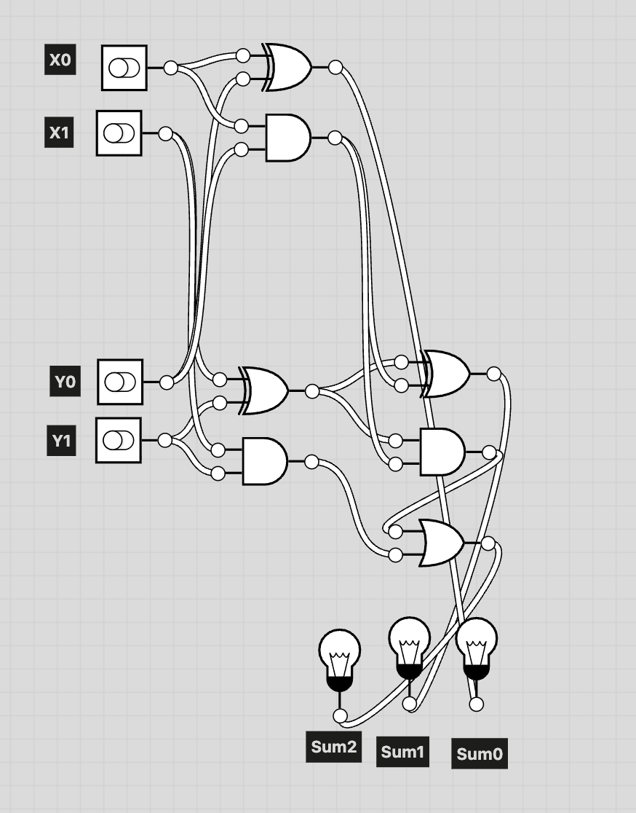
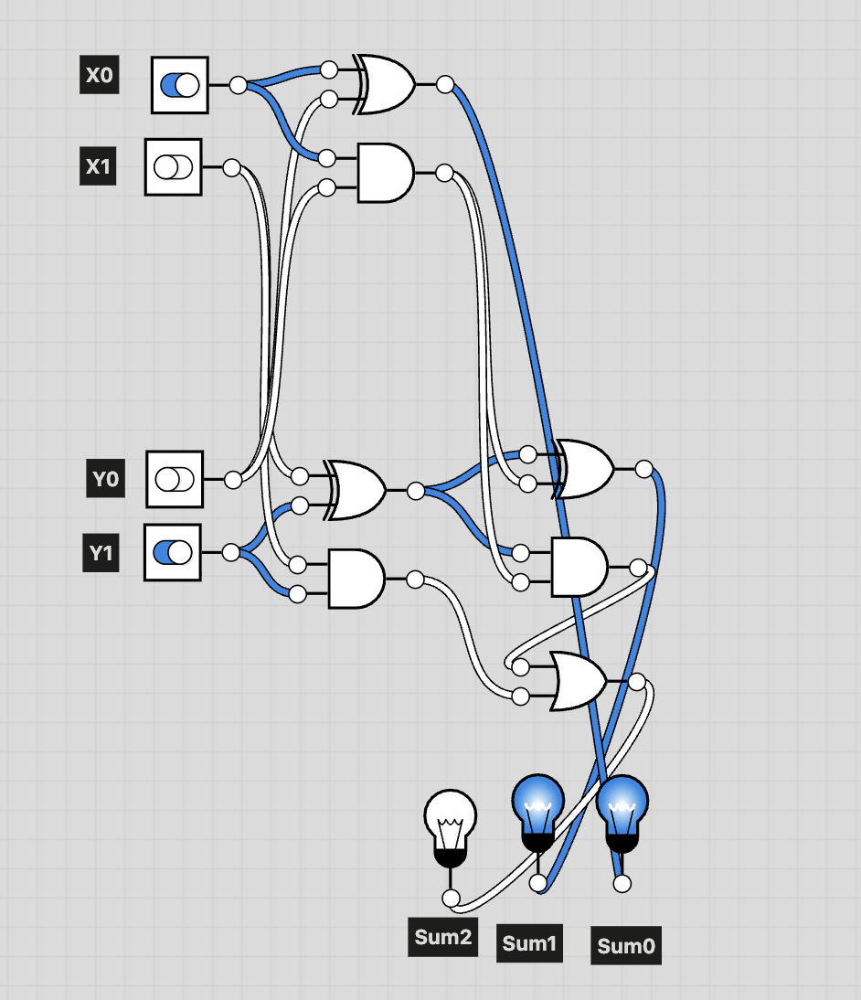
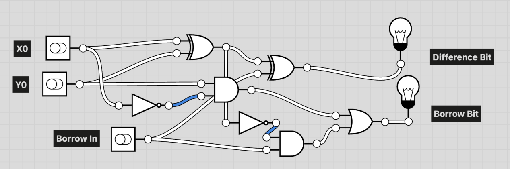
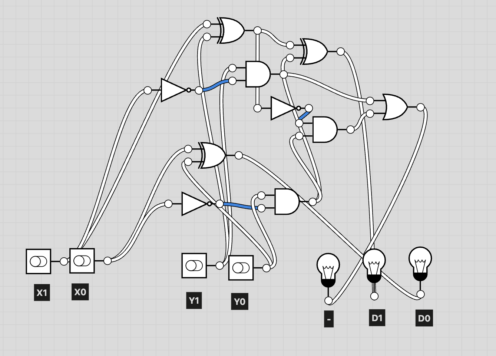
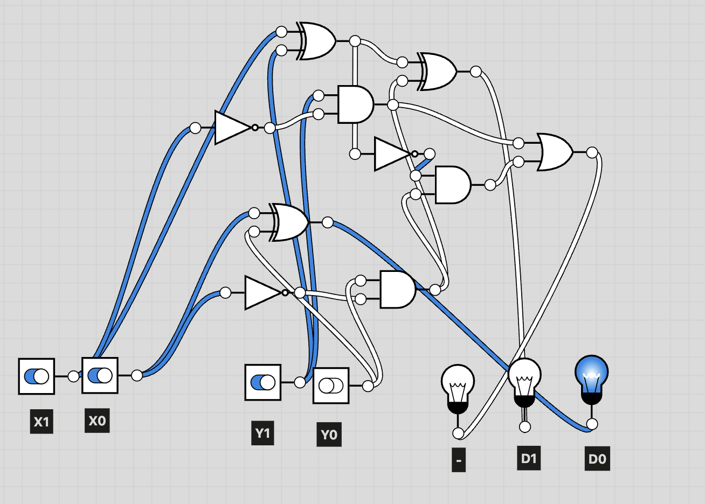
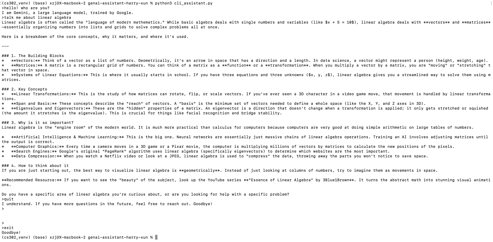
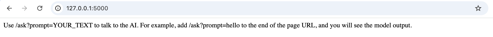
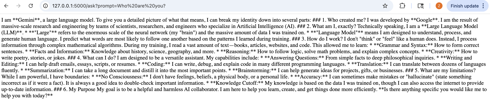

In our exploration of the nature of computers, we began by constructing the simplest possible computational systems: an addition circuit and a subtraction circuit. In this section, I briefly introduce my adder designs, starting from a single full adder and building up to a 2-bit adder.

In this full adder, the inputs are X0, Y0, and Carry, and the outputs are Sum and Carryover. The Sum represents the result of adding X0 and Y0 together with the Carry as a single bit. The Carryover indicates whether this addition produces a carry into the next higher bit: a value of 1 means a carry is generated, and 0 means no carry is generated.

By combining one full adder with one half adder, we obtain a simple circuit capable of performing 2-bit addition. The inputs are X and Y, and the output is Sum = X + Y. X is represented as X1X0, Y is represented as Y1Y0, and the result is represented as (Sum2)(Sum1)(Sum0).

To make the behavior of the circuit clearer, we use X = 01 and Y = 10 as an example. In the diagram above, blue highlights indicate the activated components and signal paths. As shown, the system correctly outputs the sum 011.
Next, we look at subtraction. Subtraction is more complex because handling borrows requires the use of NOT gates. We start with the full subtractor.

The inputs are X0, Y0, and Borrow In, and the outputs are the Difference Bit and the Borrow Bit. The Difference Bit represents the result of subtracting Y0 and Borrow In from X0 as a single bit. The Borrow Bit indicates whether this subtraction needs to borrow from the next higher bit: 1 means a borrow is needed, and 0 means no borrow is needed.
Similarly, by combining a half subtractor and a full subtractor, we obtain a circuit that can perform 2-bit subtraction.

This system performs 2-bit subtraction. The inputs are X and Y, and the output is Dif = X − Y. X is represented as X1X0, Y is represented as Y1Y0, and the difference is represented as D1D0. When the “−” indicator lights up, it means the result is negative, and the system does not currently handle negative values.

Using X = 11 and Y = 10 as an example, the result is 01, and the system correctly returns the expected output.
During group discussions on the question “Is a broken computer still a computer?”, we began to move away from discussing computers as technical artifacts and instead focused on the nature and definition of computation itself. As a group, we reached several shared assumptions: a computer must be capable of performing computation, and a computer is an object. However, we disagreed on what should count as computation and whether computational potential alone is sufficient.
My position was that a computer is only a computer when it is actively computing. When a machine is broken or has no power, it should no longer be considered a computer. From this, I developed my own definition: a computer is not a material object, but rather a property of an object. When humans or intelligent agents use an object to perform computation, that object becomes a computer. In this sense, being a computer describes a state of an object, not its physical composition.
This view received both agreement and criticism during discussion. One particularly interesting counterexample raised by my group was the case of a group of monkeys dividing bananas. Does this activity count as computation, and if so, can the monkeys themselves be considered computers? Through discussion, we arrived at the idea that when a process is observed and consciously used by humans for computation, it can be considered computational. However, this reasoning quickly led us back to deeper and unresolved philosophical questions.
These included questions such as whether the world is fundamentally material or mental, whether humans truly possess consciousness, and whether the human brain is simply a complex physical system with no special status. While these questions do not have definitive answers, the discussion highlighted that perspective matters deeply when defining what a computer is. As a result, I came to see that establishing a unified viewpoint may be both essential and extremely difficult when attempting to define computation and computers.
The reading that most strongly influenced my thinking was the paper on soldier crabs. In this work, the authors construct logic gates by observing how soldier crabs move and make decisions when encountering corridors. This was the first example I encountered in which computation was implemented using something that is neither a traditional computer nor even a conventional tool.
This immediately reminded me of The Hitchhiker’s Guide to the Galaxy, in which an alien civilization treats Earth itself as a massive computer designed to calculate the ultimate answer to the universe. If we imagine living in such a world, then Earth and everything on it could be considered a computer. Following this line of thought, I began to wonder whether computation depends entirely on how an observer interprets the world.
Suppose there exists an invisible, omnipresent, and omniscient observer who continuously observes everything in the world. Under this assumption, the properties of all objects could be defined purely by that observer’s intention. If this observer uses everything in the world to compute, then according to my definition from the previous section, everything would become a computer. Similarly, if the observer attempts to “read” everything, then all objects could arguably be called books.
This line of reasoning deeply unsettled my conceptual framework. I am uncomfortable grounding definitions of the world on an abstract and unobservable third party whose existence and intentions cannot be defined or verified. While the soldier crab example expands what can count as computation, it also highlights the difficulty of drawing boundaries without appealing to an external observer.
Gunji, Y.-P., Nishiyama, Y., & Adamatzky, A. (2026). Robust soldier crab ball gate. arXiv. https://arxiv.org/abs/1204.1749
Rather than attempting to resolve broad metaphysical questions about the nature of reality or language, I am more interested in narrower and more practical questions. Can a computer exist independently of human consciousness? What is the simplest object that can reasonably be called a computer?
One possible direction is empirical rather than philosophical. If we were to conduct a survey presenting different people with a list of objects and asking them whether each should be considered a computer, could the results themselves serve as a working definition? While such an approach would not resolve philosophical disagreement, it might reveal how people implicitly understand computation in practice.
During Construction Week, we built our own AI assistant by calling Gemini’s LLM API together with our own designed instruction prompt. My instruction prompt was very simple: it defines the model as an AI assistant that helps with work and study.
After that, I interacted with the system through the command line. Below is an example diagram.

As shown, the system essentially keeps receiving user input and calling the API. The symbol “>” represents user input. At the moment, compatibility between the AI system and the CLI system is not perfect. For example, when I type “quit,” the AI understands that I want to exit, but the command line only accepts “exit” as the termination command.
In the future, if we want to make the command line interface more intelligent, we could integrate actions like ending or restarting conversations into the LLM’s own outputs. This would make the system appear more adaptive and smarter.
Based on this, I also built a web system to interact with the AI model. Below is a simple homepage view.

The GenAI assistant on this webpage is built using a lightweight Flask web application. The system receives user prompts through URL parameters and sends them to the GeminiClient for text generation. The model's response is then directly displayed on the webpage.
In terms of design, I intentionally kept the interface minimal, with only a single “/ask” route for interaction. This choice was partly due to time constraints, and partly because a minimal structure is sufficient and robust.
A simple interaction example is shown below.

This example shows the output generated when using “who are you?” as the prompt.
My reflection began from a discussion with my neighbor about the difference between knowledge and information. We asked a simple question: if a computer stores all the books in the world, do we say that the computer has knowledge, or only information?
Within our group, we settled on one direction. Knowledge only becomes knowledge when we know how to use it. Storage alone is not sufficient. From in-class discussions and further conversations with Jean, I began to see knowledge as a mixture of objective and subjective elements. Knowledge also requires perception and verification. This makes knowledge appear to be something uniquely human.
However, the development of LLMs challenges this intuition. When interacting with large language models, we often feel that machines now possess knowledge. This raised an important question for me: is this feeling justified, or is it only an illusion?
The Bullshit Machines readings helped me better understand the nature of LLMs and why they appear intelligent. These systems are extremely effective at producing fluent and convincing language, which makes users attribute knowledge or wisdom to them.
However, after reading about Foundationalism vs. Coherentism and discussing these ideas in class, my view shifted. Whether human or machine, an entity with knowledge should possess a continuous and structured knowledge system.
LLMs do not have such systems. Their outputs shift depending on training data and probabilistic generation. They can produce different answers across different knowledge frameworks without maintaining internal epistemic consistency.
Because of this, I argue that LLMs do not possess knowledge or wisdom. They simulate the appearance of knowledge through language generation rather than maintaining a coherent knowledge structure.
Our discussion also explored whether LLMs are biased. My thinking evolved here. While bias often originates from training data (or, in extreme cases, deliberate hard-coding), I believe LLMs should still be evaluated as whole systems rather than only through their datasets.
The causes of bias may lie in the data, but solutions do not have to operate only at the data level. Adjustments to internal parameters, weighting systems, or word vector representations may also mitigate biased outputs. This again reflects a systems-oriented view of knowledge production, where both knowledge and error emerge from the full model pipeline.
Even after these discussions, I still have several unresolved questions. First, many of the reasons I used to deny that AI possesses intelligence might also apply to humans.
Humans are not always consistent thinkers. Our beliefs and outputs are constantly shaped by incoming information — that is, our experiences. In this sense, humans also operate on input data, much like LLMs operate on training data.
This leads to a more difficult comparison. If we place a human who is not skilled at critical thinking next to a highly capable LLM, what is their essential difference? Is the difference structural, experiential, or only perceptual?
This further raises a boundary question: at what point can we say that a model is truly thinking? Is fluent reasoning sufficient, or does thinking require perception, embodiment, or internal continuity?
These questions remain open for me. Rather than resolving them, they highlight the difficulty of defining knowledge, intelligence, and thought across both human and machine systems.
Bergstrom, C. T., & West, J. D. (2018). Modern-day oracles or bullshit machines? Table of contents. The Bullshit Machines. https://thebullshitmachines.com/table-of-contents/index.html
Evans, R. (n.d.). Foundationalism and coherentism: An overview. Philosophos.org. https://www.philosophos.org/epistemological-theories-foundationalism-and-coherentism
During the construction stage, I built a simple weather bot on Bluesky. This bot shows the real-time weather, temperature, and humidity in Northfield. The bot profile link is: https://bsky.app/profile/harrycs302.bsky.social . Users can interact with the bot by searching for the account harrycs302.bsky.social on Bluesky.
Each time the bot runs, it retrieves real-time weather data, humidity, and temperature for Northfield using the Open-Meteo API, and then publishes a post showing the current weather condition. After that, based on the returned weather condition, the bot selects a representative image from a local image library containing more than 30 weather images and sends it together with the post. An example post is shown below.
Below, I explain how the system was implemented based on different functional components following the order of the code design.
I used the weather API provided by Open-Meteo to retrieve real-time weather data for Northfield. One advantage of this website is that it provides an interactive API generator, where users can select variables and parameters and directly obtain the corresponding Python API call. The API relies on several external Python libraries to handle network requests, caching, and request stability. Since the returned weather result is represented as a numerical code, I hardcoded the mapping between weather codes and text descriptions used in the final post.
After retrieving the weather data, I formatted the information into natural language text. The generated message is then automatically posted to Bluesky using the standard client.send_post function.
At the same time as sending the text, the bot selects an image from a local predefined image library based on the weather code returned by the API. The selected image is uploaded together with the generated text so that each post contains both informational text and visual content. Image posting is implemented using the standard client.send_image function.
In addition to posting weather updates, my bot also supports user interaction. Whenever another user mentions the bot in a post or comment, the bot automatically replies with a text-only Northfield weather report. Due to the current program structure, the bot only checks its inbox and replies to all mentions each time I manually run the bot script. A simple example is shown below.
Please ignore the spam warning shown in the image. The newly registered
account I used for testing the bot was automatically labeled as spam.
User interaction is implemented by reading the Bluesky notification
interface. I used
client.app.bsky.notification.list_notifications()
to retrieve all notifications associated with the bot account and check
whether a post mentions the bot. When the notification reason is
identified as "mention", the program reads the corresponding
uri and cid as the reply target, and then generates
a reply message using the same method as the text-only post.
The pre-class readings and in-class discussions changed how I think about bots. Before this course, my understanding of bots mostly came from Discord meme bots and music bots. These bots are usually friendly and do not change the structure of the platform in any serious way. However, the reading “A categorisation of social media bot accounts” changed my view. It helped me see how different types of bots can affect open social media platforms at a system level. In that article, benign and malicious bots are largely defined based on their original design intention. During class discussion, we questioned whether intention is enough. We agreed that a bot's design intention does not always match its actual impact. For example, we discussed two bots with similar goals: one that mass-produces short videos to gain traffic, and another that automatically posts about a specific topic to attract followers. Even though their intentions are similar, we reacted more negatively to the first one because it disrupts the viewing experience. This made me realize that whether a bot is benign or malicious depends not only on intention, but also on how it interacts with the platform and users.
The impact of bots does not come only from the bot itself. User interaction also changes the role of a bot. The reading about Botivist influenced me a lot. One important idea in that paper is that when users know they are interacting with a bot, the communication results can change. In some cases, transparency actually improves the relationship between users and bots. In class, we continued this discussion. We first used a utilitarian perspective and asked whether social media would be better overall if there were no bots. Using Instagram as an example, we felt that it might improve. I then raised a different question: what if people simply believed there were no bots? Even if the outcome seems similar, this small difference made me think more deeply about perception and platform responsibility. If users cannot tell bots and humans apart, what should platforms do? How can platforms prevent fake-human bots from influencing recommendation systems through likes, reposts, and comments?
Even after these discussions, I still have several open questions. What are the basic principles for designing bots? What makes a bot good or bad? We discussed ethical standards such as the Three Laws of Robotics, but I am now more interested in thinking from the platform's perspective rather than the creator's perspective. What standards can platforms use to distinguish good and bad bots at low cost? Should bot accounts have the same status as human users? If not, where should the boundary be drawn?
Stieglitz, S., Brachten, F., Ross, B., & Jung, A. K. (2017). Do social bots dream of electric sheep? A categorisation of social media bot accounts. arXiv preprint arXiv:1710.04044.
Savage, S., Monroy-Hernandez, A., & Höllerer, T. (2016, February). Botivist: Calling volunteers to action using online bots. In Proceedings of the 19th ACM Conference on Computer-Supported Cooperative Work & Social Computing (pp. 813-822).
Money is often called the root of all evil. In simple terms, money is a system that defines who owns what. Traditionally, money is connected to some physical object, such as gold or shells. Even the numbers in a bank account usually correspond to actual dollars held by the bank.
Cryptocurrency works very differently. It was designed as a decentralized system, meaning that no single authority manages the database, and there is no physical object backing it. When it first appeared, many people thought it was a joke. However, over time cryptocurrency has shown significant commercial value and has become important in many kinds of transactions.
In this project, we explore how cryptocurrency and blockchain systems work. Using a simplified example, we explain how ownership and transactions can be recorded in a decentralized system. The goal is to show the basic mechanisms behind cryptocurrency, including how transactions are created, how ownership is verified through digital signatures, and how records are maintained across a distributed network instead of a central authority.
To make these ideas easier to understand, we first introduce a simple example during the concept explanation. In the demonstration section, we then recreate this same scenario in a more technical way. The demo shows how a transaction is constructed, how other nodes verify whether the sender actually owns the coins, and how cryptographic tools such as hashing and digital signatures are used to secure the system.
Rather than reproducing the full complexity of real-world systems like Bitcoin, our demonstration focuses on the core ideas behind blockchain. By rebuilding the example step by step, we illustrate how decentralized verification, cryptographic hash functions, and transaction validation work together to maintain a shared ledger without relying on a central database.
Cryptocurrency is a decentralized transaction system. Instead of a bank maintaining a central database, many computers in the network keep copies of the same transaction record. Ownership is determined by consensus: if the network agrees that someone has the right to spend certain coins, that person is considered the owner.
Each participant has a public key and a private key. The public key works like an account name, while the private key is used to generate a digital signature that proves a transaction was authorized by the owner. Other participants can verify this signature using the public key without seeing the private key itself.
Valid transactions are grouped into blocks and added to the blockchain through a process called mining. Miners repeatedly compute hashes of the block data while changing a value called a nonce. Once a hash meets the required difficulty target, the block can be added to the shared transaction history.
Our demonstration is based on the open source project blockchain-in-js. This project provides a simple implementation of a blockchain system written in JavaScript. It includes basic components such as transactions, blocks, mining, and hash verification. We used this project as the base environment to illustrate how a cryptocurrency network works.
In the demo, we recreate the example introduced earlier. At the beginning, SpongeBob owns 10 carlcoins, Patrick owns none, and Squidward acts as the miner in the network. SpongeBob creates a transaction to send 5 carlcoins to Patrick and signs the transaction using his private key. The transaction is then broadcast to the network for verification.
Squidward checks whether the signature is valid and whether SpongeBob actually owns the coins he is trying to spend. If the transaction passes these checks, Squidward includes it in a candidate block and starts the mining process. During mining, the program repeatedly changes the nonce and computes hashes until the block satisfies the required condition. Once a valid hash is found, the block is accepted and added to the blockchain.
Nambrot. (2025). GitHub - nambrot/blockchain-in-js: Build your own blockchain! GitHub. https://github.com/nambrot/blockchain-in-js
One philosophical approach that influenced my thinking is metaphysics. In previous classes, we spent a lot of time discussing the question of what a computer is. These discussions went far beyond engineering concerns and instead asked, from a philosophical perspective, what conditions are necessary for something to count as a computer.
At the time, we discussed a question that generated a lot of debate: if a computer is broken or has no power, is it still a computer? This question was very novel to me. It shifted the way I think about objects from focusing on their material properties to focusing on their conceptual function. If an object loses the function that defines it, then it may also lose the property of being that object.
Compared with computers, cryptocurrency is an even more abstract technological idea. I have never personally used this technology, so I tried to understand it through a series of thought experiments. I gradually removed different functions of the system and asked what would remain.
For example, if the blockchain mechanism disappeared, would cryptocurrency still exist? What if there were no users? What if the market value dropped to zero? Through this process of reasoning, I began to think about which components are essential for something to count as cryptocurrency.
After this reflection, I also proposed a question for the audience to discuss. I will return to this question in the following section.
Another philosophical approach that influenced my thinking is ontology, which studies what exists and what makes something a thing rather than nothing. One classic philosophical question related to ontology is the following: if everyone believes something is true, does that make it true?
This question is often easy to challenge. For example, people in the past widely believed that the Sun revolved around the Earth, but this belief was clearly incorrect. However, when this question is applied to cryptocurrency, the situation becomes more interesting.
From a philosophical perspective, a transaction in a cryptocurrency network can be understood as a process of belief change. If we treat each user's computer as an individual participant, then a transaction occurs when the network collectively accepts that the ownership of certain coins has changed.
In other words, the ownership recorded in the blockchain exists because the network agrees that it exists. The transaction process synchronizes this belief across many participants. Through consensus, all nodes update their records and accept the new ownership state.
In the previous section, I argued that the network is the core of cryptocurrency. The existence of each participant and their agreement about ownership is what allows the system to function. Based on this idea, I proposed several questions during class discussion.
During the discussion that our group led, many interesting points were raised, although because some time has passed I cannot clearly recall exactly who said each comment. One central topic concerned the first question: what exactly is the core of cryptocurrency? Some classmates discussed whether the essence of cryptocurrency lies in the blockchain algorithm itself or in the consensus among users. This line of thinking naturally extended to the second question about whether Bitcoin would still exist if no one recognized its value.
Two main directions emerged in the discussion. One view suggested that if a blockchain system can be restarted after being shut down, then it still counts as the same blockchain. This response made me reflect on the design of my original question. My intention was to imagine a situation where users and consensus were completely removed, but I realized that my question did not clearly specify this assumption. This showed me that thought experiments need to be formulated very carefully.
Another perspective focused on the idea that cryptocurrency is fundamentally a technology defined by algorithms. From this viewpoint, even without an active network, the concept of cryptocurrency would still exist because it is defined by its technical structure. This made me think more about the dual nature of technological concepts and philosophical concepts. The same object may be understood very differently by a computer scientist and by a social scientist. In this course, we often stand somewhere between these two perspectives.
The discussion on the final day of class about NFTs also led me to a new perspective about the internet itself and how it challenges traditional definitions. In that class, we were shown two digital artworks: a digital version of the Mona Lisa and another piece based on Stephen Curry whose appearance could change depending on his game performance. Fans could also copy the image and create their own versions. This example broke many of the assumptions behind traditional art. One hundred years ago, art usually meant paintings or sculptures stored in museums. People could not carry them in their pockets, nor could everyone easily make a copy. The internet changed this situation completely and forced us to rethink what counts as art.
I began to see cryptocurrency in a similar way. Before learning about cryptocurrency, I did not think that other digital payment systems, such as PayPal, fundamentally changed the nature of money. These systems mainly made transactions faster and more convenient, but they did not change who controls money or who regulates the system. Cryptocurrency, however, breaks this pattern because it is designed as a decentralized system. Since previous monetary systems were not structured in this way, cryptocurrency pushes us to reconsider what the essence of a money system actually is.
Davis, M. (2019). The Universal Computer: The Road from Leibniz to Turing (3rd ed.). CRC Press. https://doi.org/10.1201/9781315144726
Wilsdon, L., & Véliz, C. (2022). Privacy Is Power: Why and How You Should Take Back Control of Your Data. International Data Privacy Law, 12(3), 255–257. https://doi.org/10.1093/idpl/ipac007